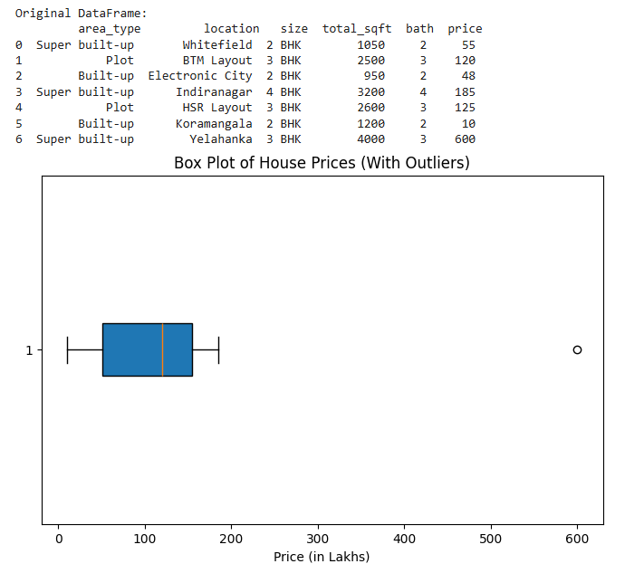

Day 1: Data Cleaning and Feature Engineering¶
📥 Workshop Resources¶
For today's hands-on session, you'll need the following materials:
📓 Colab Notebook:
Open in Google Colab
📊 Dataset:
Download day1_materials.zip - Contains the Bangalore house prices dataset
Important: Make a copy of the Colab notebook (File → Save a copy in Drive) before running it. We'll be using these resources throughout today's session.
1. Introduction to Real Estate Price Prediction¶
Welcome to Day 1 of our Machine Learning workshop! Today, we'll embark on an exciting journey to build a real estate price prediction model using data from Bangalore, India. Before we dive into coding, let's understand the fundamental concepts that make machine learning projects successful.
2. Understanding the Problem¶
Imagine you're a real estate agent or a home buyer trying to determine the fair price of a property. What factors would you consider? The location, size of the house, number of bedrooms, bathrooms, and many other features play crucial roles. Our goal is to teach a computer to understand these patterns and predict prices automatically.
3. The Machine Learning Pipeline¶
Every successful machine learning project follows a structured approach:
- Data Collection: Gathering relevant information
- Data Cleaning: Removing errors and inconsistencies
- Feature Engineering: Creating meaningful variables from raw data
- Exploratory Data Analysis: Understanding patterns in data
- Model Building: Training algorithms (we'll cover this in Day 2)
- Model Evaluation: Testing how well our model performs
Today, we'll focus on the first four crucial steps - the foundation of any ML project.
4. Data Cleaning: The Foundation of Quality Models¶
4.1 Why is Data Cleaning Important?¶
Think of data cleaning like preparing ingredients before cooking. You wouldn't use rotten vegetables or unwashed produce in a meal, right? Similarly, dirty data leads to poor predictions. Real-world data is messy - it has missing values, inconsistencies, duplicates, and errors that can mislead our model.
4.2 Understanding Missing Values¶
Example Scenario: Imagine a dataset of house listings where some entries don't have information about the number of bathrooms or the location. What should we do?
Two Common Approaches:
- Deletion: Remove rows with missing data (when dataset is large)
- Imputation: Fill missing values with mean, median, or mode (when data is scarce)
When to delete vs. impute? If you have 13,000 rows and only 1,000 have missing values, deletion is safe. But if 8,000 rows have missing values, you might want to impute to preserve information.
Example DataFrame - Before:
| Location | BHK | Bath | Total_sqft | Price |
|---|---|---|---|---|
| Whitefield | 3 | 2.0 | 1500 | 85 |
| Marathahalli | 2 | NaN | 1100 | 60 |
| Electronic City | 4 | NaN | 2000 | 120 |
| Koramangala | 3 | 3.0 | 1450 | 95 |
| HSR Layout | 2 | NaN | 950 | 55 |
| Indiranagar | 4 | 3.0 | 1800 | 110 |
After Deletion:
| Location | BHK | Bath | Total_sqft | Price |
|---|---|---|---|---|
| Whitefield | 3 | 2.0 | 1500 | 85 |
| Koramangala | 3 | 3.0 | 1450 | 95 |
| Indiranagar | 4 | 3.0 | 1800 | 110 |
Result: Lost 3 rows of data
After Imputation (with median = 2.5):
| Location | BHK | Bath | Total_sqft | Price |
|---|---|---|---|---|
| Whitefield | 3 | 2.0 | 1500 | 85 |
| Marathahalli | 2 | 2.5 | 1100 | 60 |
| Electronic City | 4 | 2.5 | 2000 | 120 |
| Koramangala | 3 | 3.0 | 1450 | 95 |
| HSR Layout | 2 | 2.5 | 950 | 55 |
| Indiranagar | 4 | 3.0 | 1800 | 110 |
Result: Preserved all 6 rows of data
4.3 Dealing with Irrelevant Features¶
Not every piece of information is useful. Consider these columns in a house price dataset:
- Society Name: The specific housing society
Question: Do these strongly influence price predictions? Often, the answer is no. Removing irrelevant features:
- Simplifies the model
- Reduces computational cost
- Prevents overfitting
- Improves model performance
4.4 Standardizing Data Formats¶
The Problem: Your dataset has a "size" column with values like:
- "2 BHK"
- "3 Bedroom"
- "4 BHK"
The Solution: Extract just the numeric part (2, 3, 4) to create a consistent "bhk" (Bedroom, Hall, Kitchen) column that machines can understand.
Example - Before:
| Location | Size | Bath | Price |
|---|---|---|---|
| Whitefield | 2 BHK | 2 | 60 |
| Marathahalli | 3 Bedroom | 2 | 85 |
| HSR Layout | 4 BHK | 3 | 120 |
| Koramangala | 2 Bedroom | 1 | 55 |
| Indiranagar | 3 BHK | 2 | 95 |
| Electronic City | 1 RK | 1 | 35 |
After Standardization:
| Location | Size | BHK | Bath | Price |
|---|---|---|---|---|
| Whitefield | 2 BHK | 2 | 2 | 60 |
| Marathahalli | 3 Bedroom | 3 | 2 | 85 |
| HSR Layout | 4 BHK | 4 | 3 | 120 |
| Koramangala | 2 Bedroom | 2 | 1 | 55 |
| Indiranagar | 3 BHK | 3 | 2 | 95 |
| Electronic City | 1 RK | 1 | 1 | 35 |
Now we have a clean numeric BHK column that machines can process!
4.5 Handling Range Values¶
Example: A property's size is listed as "1133 - 1384 sq ft" instead of a single number.
Solution: Convert ranges to their average. For "1133 - 1384", we'd use (1133 + 1384) / 2 = 1258.5 sq ft.
Example - Before:
| Location | BHK | Total_sqft | Price |
|---|---|---|---|
| Whitefield | 3 | 1200 | 85 |
| Marathahalli | 2 | 1133 - 1384 | 60 |
| HSR Layout | 2 | 950 - 1100 | 55 |
| Koramangala | 4 | 2200 - 2450 | 120 |
| Indiranagar | 3 | 1500 | 95 |
| Electronic City | 3 | 1350 - 1550 | 80 |
After Range Conversion:
| Location | BHK | Total_sqft | Price |
|---|---|---|---|
| Whitefield | 3 | 1200.0 | 85 |
| Marathahalli | 2 | 1258.5 | 60 |
| HSR Layout | 2 | 1025.0 | 55 |
| Koramangala | 4 | 2325.0 | 120 |
| Indiranagar | 3 | 1500.0 | 95 |
| Electronic City | 3 | 1450.0 | 80 |
All range values are now converted to single numeric values (averages)
4.6 Cleaning Inconsistent Units¶
Sometimes you'll find values like:
- "2500 sq ft"
- "34.46 Sq. Meter"
- "4125 Perch"
These mixed units make comparison impossible. The best approach is to convert everything to a standard unit or exclude entries that can't be converted reliably.
5. Feature Engineering: Creating Meaningful Variables¶
Feature engineering is the art of creating new, more informative variables from existing data. It's often the difference between a mediocre and an excellent model.
5.1 Creating Price Per Square Foot¶
Why? Absolute price doesn't tell the whole story. A 3000 sq ft house costing ₹60 lakhs might be a better deal than a 1000 sq ft house at ₹30 lakhs.
Calculation: Price per sq ft = (Price × 100,000) / Total Square Feet
This normalized metric helps us compare properties of different sizes on equal footing.
Example - Before:
| Location | BHK | Total_sqft | Price (Lakhs) |
|---|---|---|---|
| Whitefield | 2 | 1000 | 30 |
| Marathahalli | 3 | 3000 | 60 |
| Koramangala | 3 | 1500 | 50 |
| HSR Layout | 2 | 900 | 35 |
| Indiranagar | 4 | 2000 | 80 |
| Electronic City | 3 | 1200 | 45 |
After Feature Engineering:
| Location | BHK | Total_sqft | Price (Lakhs) | Price_per_sqft |
|---|---|---|---|---|
| Whitefield | 2 | 1000 | 30 | 3,000 |
| Marathahalli | 3 | 3000 | 60 | 2,000 |
| Koramangala | 3 | 1500 | 50 | 3,333 |
| HSR Layout | 2 | 900 | 35 | 3,889 |
| Indiranagar | 4 | 2000 | 80 | 4,000 |
| Electronic City | 3 | 1200 | 45 | 3,750 |
Insights from Price per sqft: - Despite Marathahalli being expensive (₹60L), it has the lowest price per sqft (₹2,000) - HSR Layout offers better value at ₹3,889 per sqft - Indiranagar is the most expensive at ₹4,000 per sqft
5.2 Grouping Rare Categories¶
The Problem: Your dataset has 1,293 unique locations, but 1,052 of them appear fewer than 10 times.
The Solution: Group infrequent categories into an "other" category. Why?
- Statistical Significance: Locations with only 1-2 properties don't provide enough data for reliable patterns
- Model Simplicity: Fewer categories mean fewer variables to process
- Generalization: Helps the model focus on common patterns rather than rare exceptions
Real-world analogy: If you're learning to recognize cars, you'd focus on common brands like Toyota, Honda, and Ford before worrying about rare vintage models.
Example - Before:
| Location | Property_Count | Avg_Price |
|---|---|---|
| Whitefield | 250 | 75 |
| Marathahalli | 180 | 65 |
| Koramangala | 220 | 85 |
| HSR Layout | 150 | 80 |
| Indiranagar | 200 | 95 |
| Electronic City | 120 | 55 |
| Yelahanka | 8 | 60 |
| Devanahalli | 5 | 45 |
| Bagalur | 3 | 40 |
| Attibele | 2 | 35 |
| Hoskote | 1 | 30 |
After Grouping (threshold < 10):
| Location | Property_Count | Avg_Price |
|---|---|---|
| Whitefield | 250 | 75 |
| Marathahalli | 180 | 65 |
| Koramangala | 220 | 85 |
| HSR Layout | 150 | 80 |
| Indiranagar | 200 | 95 |
| Electronic City | 120 | 55 |
| Other | 19 | 42 |
Result: Reduced from 11 unique locations to 7, grouping 5 rare locations with insufficient data
6. Outlier Detection and Removal¶
Outliers are extreme values that don't fit the general pattern. They can severely distort your model's understanding of the data.
6.1 What are Outliers?¶
Example 1: A 6-bedroom house with only 1,020 square feet total. That's roughly 170 sq ft per room - smaller than most bathrooms! This is clearly an error or exceptional case.
Example 2: A property listed at ₹12,000,000 per square foot when most properties in that area are ₹5,000-10,000 per sq ft.
Example DataFrame:
| Location | BHK | Bath | Total_sqft | Price | Price_per_sqft | Sqft_per_room |
|---|---|---|---|---|---|---|
| Whitefield | 2 | 2 | 1200 | 65 | 5,417 | 600 |
| Marathahalli | 3 | 2 | 1500 | 90 | 6,000 | 500 |
| Koramangala | 6 | 2 | 1020 | 80 | 7,843 | 170 ← Outlier! |
| HSR Layout | 3 | 2 | 1400 | 16,800 | 12,000,000 | 467 ← Extreme! |
| Indiranagar | 4 | 3 | 2000 | 115 | 5,750 | 500 |
| Electronic City | 2 | 1 | 1100 | 62 | 5,636 | 550 |
| Whitefield | 8 | 3 | 1200 | 95 | 7,917 | 150 ← Outlier! |
Problems Identified: - Row 3: 6 BHK in only 1020 sqft = 170 sqft per room (impossible!) - Row 4: ₹12 million per sqft (data entry error, probably meant ₹12,000) - Row 7: 8 BHK in 1200 sqft = 150 sqft per room (unrealistic)
6.2 Why Remove Outliers?¶
Imagine teaching someone about typical house prices by showing them:
- 99 normal houses (₹30-80 lakhs)
- 1 ultra-luxury mansion (₹500 lakhs)
They might develop a skewed understanding. Similarly, outliers can mislead machine learning models.
6.3 Domain-Based Outlier Removal¶
Rule of Thumb: In urban Indian housing, a reasonable minimum is about 300 square feet per bedroom.
Logic:
- 1 BHK should have at least 300 sq ft
- 2 BHK should have at least 600 sq ft
- 3 BHK should have at least 900 sq ft
Properties below these thresholds are likely data entry errors or exceptional cases we should exclude.
Example - Before:
| Location | BHK | Total_sqft | Price | Sqft_per_room | Status |
|---|---|---|---|---|---|
| Whitefield | 2 | 1200 | 65 | 600 | ✓ Valid |
| Marathahalli | 3 | 1500 | 90 | 500 | ✓ Valid |
| Koramangala | 6 | 1020 | 80 | 170 | ✗ Remove |
| HSR Layout | 4 | 1800 | 110 | 450 | ✓ Valid |
| Indiranagar | 4 | 800 | 70 | 200 | ✗ Remove |
| Electronic City | 2 | 950 | 55 | 475 | ✓ Valid |
| Yelahanka | 5 | 1200 | 75 | 240 | ✗ Remove |
| Hebbal | 3 | 1350 | 85 | 450 | ✓ Valid |
After Domain-Based Removal (minimum 300 sqft/room):
| Location | BHK | Total_sqft | Price | Sqft_per_room | Status |
|---|---|---|---|---|---|
| Whitefield | 2 | 1200 | 65 | 600 | ✓ Valid |
| Marathahalli | 3 | 1500 | 90 | 500 | ✓ Valid |
| HSR Layout | 4 | 1800 | 110 | 450 | ✓ Valid |
| Electronic City | 2 | 950 | 55 | 475 | ✓ Valid |
| Hebbal | 3 | 1350 | 85 | 450 | ✓ Valid |
Result: Removed 3 properties with unrealistic sqft per room ratios
6.4 Outlier Removal using Box Plots and IQR¶
Box Plot Visualization¶
A box plot (or whisker plot) is a graphical representation that helps visualize the spread and skewness of numerical data. It displays:
- Median (Q2) — The midpoint of the dataset, dividing it into two equal halves.
- First Quartile (Q1) — The 25th percentile — 25% of the data lies below this value.
- Third Quartile (Q3) — The 75th percentile — 75% of the data lies below this value.
- Interquartile Range (IQR) — The range between Q3 and Q1, calculated as IQR = Q3 - Q1.
- Whiskers: Extend from Q1 and Q3 to show variability outside the upper and lower quartiles.
- Outliers: Points plotted beyond the whiskers that indicate unusually high or low values.
A box plot makes it easy to spot outliers visually, as they appear as isolated points away from the main data cluster.
Steps:
-
Compute Q1 and Q3 — Find the 25th and 75th percentiles of the data.
Suppose you have house prices (in lakhs):
[10, 48, 55, 120, 125, 185, 600]
Q1 (First Quartile / 25th Percentile)
The value below which 25% of the data falls.
Here, Q1 ≈ 48 → one-fourth of the data is below ₹48 L.
Q3 (Third Quartile / 75th Percentile)
The value below which 75% of the data falls.
Here, Q3 ≈ 185 → most data (three-fourths) is below ₹185 L.
-
Calculate IQR
𝐼𝑄𝑅=𝑄3−𝑄1 -
Determine cutoff limits
Lower bound = Q1 - 1.5 × IQRUpper bound = Q3 + 1.5 × IQR -
Identify and remove outliers — Any value less than the lower bound or greater than the upper bound is considered an outlier.


7. Data Normalization and Standardization¶
Before feeding data to machine learning models, we often need to scale our features to ensure they're on similar ranges.
7.1 Why Scale Features?¶
The Problem: Features with larger ranges can dominate the learning process.
Example - Unscaled Data:
| Location | BHK | Bath | Total_sqft | Price |
|---|---|---|---|---|
| Whitefield | 2 | 2 | 1200 | 60 |
| Marathahalli | 3 | 3 | 2500 | 120 |
| Koramangala | 2 | 1 | 800 | 40 |
| HSR Layout | 4 | 3 | 3000 | 150 |
| Indiranagar | 3 | 2 | 1800 | 95 |
| Electronic City | 2 | 2 | 1000 | 50 |
Feature Ranges:
Total_sqft: 800 to 3000 (range = 2200)Bath: 1 to 3 (range = 2)BHK: 2 to 4 (range = 2)
Notice how Total_sqft has a much larger range! Without scaling, models might give it disproportionate importance simply because of its larger numeric values.
7.2 Standardization (Z-score Normalization)¶
Transforms data to have mean = 0 and standard deviation = 1.
Formula: z = (x - μ) / σ
When to use: When your data follows a normal distribution or when using algorithms like SVM, Linear Regression, or Logistic Regression.
Example - After Standardization:
| Location | Total_sqft | Standardized_sqft | Bath | Standardized_bath |
|---|---|---|---|---|
| Whitefield | 1200 | -0.27 | 2 | 0.00 |
| Marathahalli | 2500 | 1.46 | 3 | 1.22 |
| Koramangala | 800 | -1.18 | 1 | -1.22 |
| HSR Layout | 3000 | 2.19 | 3 | 1.22 |
| Indiranagar | 1800 | 0.64 | 2 | 0.00 |
| Electronic City | 1000 | -0.64 | 2 | 0.00 |
Result:
- Mean ≈ 0 for both features
- Standard deviation = 1
- Values can be negative or positive
- Preserves outliers' relationships
7.3 Normalization (Min-Max Scaling)¶
Scales data to a fixed range, typically [0, 1].
Formula: x_scaled = (x - x_min) / (x_max - x_min)
When to use: When you need a bounded range, especially for neural networks or when data doesn't follow normal distribution.
Example - After Normalization:
| Location | Total_sqft | Normalized_sqft | Bath | Normalized_bath |
|---|---|---|---|---|
| Whitefield | 1200 | 0.18 | 2 | 0.50 |
| Marathahalli | 2500 | 0.77 | 3 | 1.00 |
| Koramangala | 800 | 0.00 | 1 | 0.00 |
| HSR Layout | 3000 | 1.00 | 3 | 1.00 |
| Indiranagar | 1800 | 0.45 | 2 | 0.50 |
| Electronic City | 1000 | 0.09 | 2 | 0.50 |
Result:
- All values between 0 and 1
- Minimum value becomes 0
- Maximum value becomes 1
- Preserves the relative distances between values
Key Difference:
- Standardization: Values can be negative or > 1; preserves outliers better
- Normalization: Always between [0,1]; more affected by outliers
8. Preparing Data for Machine Learning¶
8.1 Encoding Categorical Variables¶
Machine learning algorithms work with numbers, not text. We need to convert categorical variables like "location" into numerical format.
8.1.1 One-Hot Encoding¶
Creates separate binary (0 or 1) columns for each category.
Example - Before One-Hot Encoding:
| Location | BHK | Bath | Total_sqft | Price |
|---|---|---|---|---|
| Rajaji Nagar | 2 | 2 | 1200 | 50 |
| Hebbal | 3 | 2 | 1500 | 75 |
| Koramangala | 2 | 1 | 1000 | 60 |
| Rajaji Nagar | 3 | 3 | 1400 | 70 |
| Whitefield | 4 | 3 | 2000 | 95 |
| Hebbal | 2 | 2 | 1100 | 55 |
After One-Hot Encoding:
| BHK | Bath | Total_sqft | Price | Rajaji_Nagar | Hebbal | Koramangala | Whitefield |
|---|---|---|---|---|---|---|---|
| 2 | 2 | 1200 | 50 | 1 | 0 | 0 | 0 |
| 3 | 2 | 1500 | 75 | 0 | 1 | 0 | 0 |
| 2 | 1 | 1000 | 60 | 0 | 0 | 1 | 0 |
| 3 | 3 | 1400 | 70 | 1 | 0 | 0 | 0 |
| 4 | 3 | 2000 | 95 | 0 | 0 | 0 | 1 |
| 2 | 2 | 1100 | 55 | 0 | 1 | 0 | 0 |
Each location now has its own binary column. A "1" indicates the property is in that location.
Advantages:
- Works well with algorithms that assume linear relationships
- No ordinal relationship assumed between categories
- Widely supported
Disadvantages:
- Creates many columns for high-cardinality features
- Increases memory usage and computation time
- Can lead to sparse matrices
Note: We don't create a column for "other" because if all location columns are 0, the model knows it's "other."
8.1.2 Label Encoding¶
Assigns a unique integer to each category.
Example:
| Location | BHK | Price | Label_Encoded |
|---|---|---|---|
| Rajaji Nagar | 2 | 50 | 0 |
| Hebbal | 3 | 75 | 1 |
| Koramangala | 2 | 60 | 2 |
| Rajaji Nagar | 3 | 70 | 0 |
| Whitefield | 4 | 95 | 3 |
| Hebbal | 2 | 55 | 1 |
Each unique location gets a single integer. Memory efficient but implies order.
Advantages:
- Memory efficient (single column)
- Simple and fast
Disadvantages:
- Implies ordinal relationship (Koramangala > Hebbal > Rajaji Nagar)
- Can mislead algorithms like Linear Regression
- Best for: Ordinal data (e.g., Low, Medium, High) or tree-based models
8.1.3 Target/Mean Encoding¶
Replaces categories with the mean of the target variable for that category.
Example - Original Data:
| Location | BHK | Price |
|---|---|---|
| Rajaji Nagar | 2 | 50 |
| Hebbal | 3 | 75 |
| Koramangala | 2 | 60 |
| Rajaji Nagar | 3 | 70 |
| Hebbal | 2 | 80 |
| Koramangala | 4 | 65 |
After Target Encoding (using mean price per location):
| Location | BHK | Price | Location_Encoded |
|---|---|---|---|
| Rajaji Nagar | 2 | 50 | 60.0 |
| Hebbal | 3 | 75 | 77.5 |
| Koramangala | 2 | 60 | 62.5 |
| Rajaji Nagar | 3 | 70 | 60.0 |
| Hebbal | 2 | 80 | 77.5 |
| Koramangala | 4 | 65 | 62.5 |
Each location is replaced by its average price (Rajaji Nagar = 60, Hebbal = 77.5, Koramangala = 62.5)
Advantages:
- Captures relationship between category and target
- Single column (memory efficient)
Disadvantages:
- Risk of data leakage
- Can overfit
- Best for: High-cardinality features in tree-based models
8.1.4 Frequency Encoding¶
Replaces categories with their frequency count or percentage.
Example:
| Location | BHK | Price | Frequency_Count | Frequency_Pct |
|---|---|---|---|---|
| Rajaji Nagar | 2 | 50 | 250 | 0.25 |
| Hebbal | 3 | 75 | 180 | 0.18 |
| Koramangala | 2 | 60 | 220 | 0.22 |
| Rajaji Nagar | 3 | 70 | 250 | 0.25 |
| Whitefield | 4 | 95 | 200 | 0.20 |
| Hebbal | 2 | 55 | 180 | 0.18 |
Popular locations get higher frequency values (Rajaji Nagar appears 250 times = 25% of dataset)
Best for: When frequency itself is predictive (e.g., popular locations might be more expensive)
Comparison Summary:
| Method | Columns Created | Memory | Preserves Info | Risk of Overfitting | Best Use Case |
|---|---|---|---|---|---|
| One-Hot | Many (n-1) | High | Yes | Low | Linear models, nominal data |
| Label | 1 | Low | Partial | Low | Tree models, ordinal data |
| Target | 1 | Low | Yes | High | Tree models, high cardinality |
| Frequency | 1 | Low | Partial | Medium | When frequency matters |
For our project, we'll use One-Hot Encoding as it works well with linear models and doesn't assume any ordinal relationship between locations.
8.2 Separating Features and Target¶
Features (X): The input variables we use to make predictions - Total square feet - Number of bathrooms - Number of bedrooms (BHK) - Location (one-hot encoded)
Target (y): What we're trying to predict - Price
This separation is crucial because we train the model to find patterns between X and y.
9. Data Visualization: Seeing Patterns¶
Visualization helps us understand our data intuitively.

9.1 Histogram of Price Per Square Foot¶
A histogram shows the distribution of values: - X-axis: Price ranges (e.g., ₹3,000-4,000, ₹4,000-5,000) - Y-axis: How many properties fall in each range
What to look for: - Where most properties are concentrated - Whether the distribution is normal (bell-shaped) - Presence of extreme values

9.2 Scatter Plots for Outlier Detection¶
Purpose: Compare 2 BHK vs. 3 BHK properties in the same location.
Axes: - X-axis: Total square feet - Y-axis: Price
What we expect: - 3 BHK properties (green) should generally be above 2 BHK properties (blue) for the same square footage - Both should show an upward trend (more sq ft = higher price)
Red Flags: - Blue dots (2 BHK) above green crosses (3 BHK) at the same square footage - Properties that don't follow the general upward trend

10. Summary of Day 1 Concepts¶
Today we've learned that successful machine learning requires careful preparation:
- Clean your data: Remove inconsistencies, handle missing values, standardize formats
- Engineer features: Create meaningful variables like price per sq ft
- Remove outliers: Eliminate extreme values using domain knowledge and statistical methods
- Prepare for algorithms: Convert categories to numbers, separate features from targets
11. Now let's begin to Code!¶
Open the Colab Link, Make a Copy and Upload the dataset on Colab
📓 Colab Notebook:
Open in Google Colab
📊 Dataset:
day1.zip - Contains the Bangalore house prices dataset
See you next week! 🚀